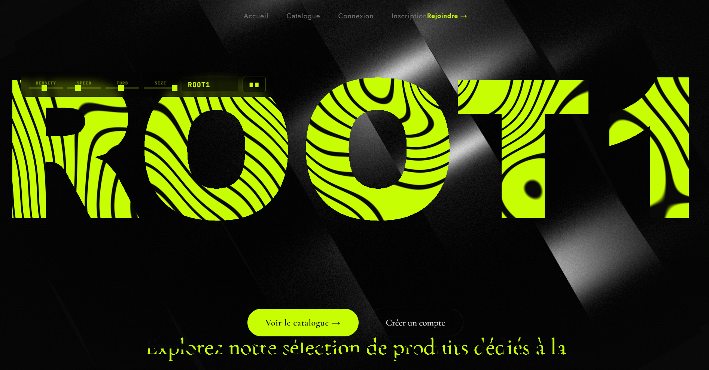

eBoutique
Application e-commerce PHP MVC
Application e-commerce développée en PHP avec architecture MVC : catalogue, inscription/connexion, gestion des rôles, upload d'images, panier en session, validation des commandes et profil utilisateur.

Technologies
- PHP (MVC)
- MySQL
- HTML5
- CSS3
- JavaScript